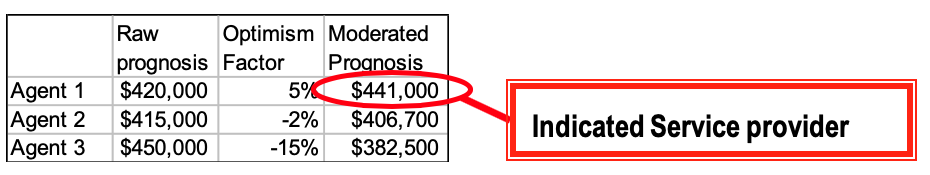
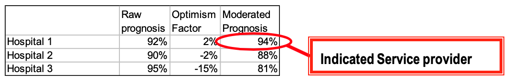

As I hawked my father from one oncologist to another I invented the Gruen tender and published details of it in a much more general article here (pdf) in the Australian Journal of Public Administration in 2002. I have subsequently outlined it at greater length in this paper (pdf).
I presumed when I came up with the idea that it was sufficiently simple that someone else must have come up with it. It still surprises me that I can't find anyone else who's suggested it but there you go, I haven't.
I've since expounded it in various contexts. Like auctions for goods, Gruen tenders provide a means by which someone responsible for allocating a job to a service provider can get the service provider to produce an unbiased estimate of the prognosis for the service provision. This offers a powerful tool for administrators who must allocate jobs to service providers and, also for consumers.
Step One: The service provider is required to predict in advance the prognosis in terms of a particular quantitative outcome and/or a statistical prediction of the likelihood of their achieving certain desired benchmarks.
Step Two: These prognoses are logged into a system and the service providers' results are also logged when they become known. The system then produces an 'optimism factor' indicating the extent to which the service providers past predictions have tended to be optimistic or pessimistic.
Step Three: Once the system has sufficient data to give the 'optimism factor' some statistical robustness, 'raw prognoses' provided in Step One' can be 'moderated' by reference to the 'optimism factor' applying to the service provider. The moderated raw prognoses then become unbiased predictions of actual results.
This is best explained with an example. This is easiest where the service provider's prognosis can be measured as a predicted result such as the price a real estate agent indicates they will achieve upon selling a person's house.
Each real estate agent must enter their predicted price (as a single point or an the average within a range) in a system and then return to that system to log the actual result each step of this process being subject to occasional audit.
After an appropriate number of observations have been made, an 'optimism factor' will be generated. The agent must then provide both their raw prognosis and their moderated prognosis to clients with the data being input.
Assume there is a client seeking to engage a an agent to sell their house. They receive a prognosis from three agents as indicated in the attached table. The first agent does not offer the most attractive raw prognosis, but when it is taken into account that it typically underestimates the prices it will achieve by 5% whilst the other two agents over-promise, its moderated prognosis is the most favourable.

The service providers might provide prognoses as follows with the indicated service provider being that with the best moderated prognosis.In the case of clinical service providers the prognoses would be in the form of some probabilistic standard of errors. Thus for instance on setting a broken bone the prognosis would be in the form of a probability that certain benchmarks would be met. Thus for instance the prognosis might be that there is a 92 per cent chance of the fracture being set without any adverse event as defined in some code such events may include infection, the need to reset the bone and so on.

The merits of such an approach are several-fold.- It produces simple numbers which generate important information about quality.
- Those numbers can be used by medical administrators, and by patients to select the medical service best meeting their needs either on its own or in conjunction with information about the price service providers will charge.
- It disciplines medical service providers to make predictions. In itself this process is likely to be beneficial in helping them to understand better their own competence and the factors influencing success.
- Publishing the raw performance of service providers can not only provide a highly misleading picture of service quality but can also create invidious incentives, particularly in the case of clinical service providers, an incentive to turn away the worst risks.
- Systems have tried to deal with this issue by 'risk rating' cases. But this is generally according to some mechanically followed 'table of risks' for different cases. Gruen tenders allow service providers to go by such a table of risks should they wish, but they can also 'forward risk rate' according to their own knowledge and experience.
- There is never any incentive for medical service providers to turn someone away because they fear they will harm their rating. They simply make a prognosis that reflects their assessment of the relative risk of their patients.
Postscript: It occurs to me to add that Gruen tenders could be established either by competition or by regulation. Excellent service providers have something to gain from submitting themselves to the rigours of Gruen tenders - they enable them to demonstrate their superiority to others (or at least have clients/customers asking 'why won't their competitors do the same). I would have thought that competing HMOs in America particularly, but insurers here have a huge amount to gain from using Gruen tenders. But change takes time. Likewise government funders of medical services would have an interest in using them to allocate work.
It's an open question whether we should regulate to require Gruen tenders in some areas. Many professions are swamped in regulation which usually achieves little more than some basic consumer protection at considerable cost. Regulating to require real estate agents to use Gruen tenders would improve information in the market for real estate services considerably.
Further, Gruen tenders will be most effective where the event they measure is some discrete event that is well understood and where possible outcomes can be well specified before the event. Further where outcomes are probabilistic as the probabilities of failure fall to zero the number of observations needed for statistical significance rise asymptotically.
Thus setting a bone, or an obstetric delivery are good candidates because the incidence of unwanted outcomes is not extremely low (quite a fair percentage of settings of broken bones need resetting) and the result can be known within a short period of days in the case of a delivery and in a few weeks in the case of the setting of a bone. For my father's cancer, it would have been trickier, because years can pass before one knows of one's success or otherwise and often new things will have intervened in the meantime - new drugs, new treatments, new service providers.
I like it ... just the usual problems with obtaining reliable data for performance indicators
If industry leaders were to take this up as a market signal, you could make it an industry standard. An independent firm could sell the service of logging and assessing the variability of firms' tenders. Whether or not the benefits of doing this are greater than the costs depends upon the industry you're looking at (asymmetry of information etc.etc.)
I've seen you espouse this proposal before and it really does makes sense for competitive environments with relatively similar goals and simple performance criteria. Real estate is quite easy as there is a defined output at the end (price). Health a little more difficult - although the dead/alive is one performance criteria, quality of life, degree of movement/pain are somewhat harder to gain equivalent ratings. An example would be the use of a placebo - known to provide some health benefits with little side-effects or medication which has more benefits with more side-effects. But if you knowingly use a placebo, its benefits are diminished. Makes it a bit harder to compare. There's quite a lot of similar work occurring in prediction markets and value networks but perhaps not as refined as the Gruen tender.
Does it come with a translation?
I would be hard put to argue against the general thrust of this idea, namely that more information properly presented will lead to better economic outcomes. I have also been personally struck by the lack of information available in one of the largest industries in the developed world, namely health.
I think application of this idea to health care would be more difficult (but potentially more rewarding) than other areas. The reason is that health outcomes are multi-dimensional and often binary. For instance, did the patient die, yes or no. Were they cured, yes or no. Was the condition improved, yes or no. The fact that there are several possible success measures complicates both data gathering and interpretation. More importantly, yes-no data carries rather little information compared to numeric data. You would need many thousands of records to be able to reliably estimate a possibly time-varying optimism factor for say probability of patient survival. Any if you were trying to do this separately for each medical department and type of ailment you might never get enough data.
By way of contrast, in the real estate market there is only one obvious success measure from the seller
Chris,
All good points which probe the limitations of the mechanism. I agree that with low levels of undesired incidents it can take a while for observations to become statistically significant. But there are responses to some of your concerns.
For instance, why not aggregate 'optimism factors' over a range of procedures. One could aggregate it over a whole hospital, event though it was doing lots of different procedures. One could also produce more team and procedure specific optimism factors, but not use them until they became more statistically robust.
Nicholas,
The logic is faultless, but I think it is almost completely impractical.
Think of all the abundant information about such things as Mobile Phone Plans, insurance, superannuation, motor cars.. the list is endless, but does it help us decide?
For a selecet few maybe, but the vast majority take the default option, or the one their friend suggested, or just go with 'the vibe'.
For your suggestion to have any value it must be very widely implemented in a field to give it a valid sample size, it must be independently and centrally collated to maintain levels of trust, and this must be funded from the process it seeks to measure.
It would be an expensive administrative burden for the benefit of only a few dedicated people. Most people will simply say its to hard to use.
One other point Chris,
I don't think you should write off the possibility that Gruen Tenders could emerge competitively. I agree they're unlikely to cover the market in this instance. But a good service provider has an interest in using it to demonstrate their superiority - or even just as a gimmick, a 'point of difference' as they say.
Here is an stock tipper advertising an audited record of its performance.
http://www.fatprophets.com.au/content.aspx?page=Performance
Rex,
I'd sure like a GT to help me decide between real estate agents. I wouldn't find it confusing at all. You just read the last column in the examples and pick the highest number!
In health I'd use it too if offered it. But the evidence suggests that at least at present, most consumers don't do this kind of thing when it comes to health. But I think the GT has more going for it for health administrators and funders initially at least. They're dolling out millions of dollars and where this can be effective - for instance where I've suggested it would be most effective, it could help them make allocational and funding decisions to a considerable degree.
Great theory and would work on computer earth. Where people tell the
truth all the time. and recognise the truth all the time.
I work in the health industry as an ambulance paramedic. Between people
being able to recognise the right thing accepting the right thing and
doing the right thing it will never work. The people industry is an
interesting
field. That is why there is so much variation in the car, phone
insurance realestate health etc etc industry.
I love statistics. and can see what you are driving at. But the best
people to handle the morass of the human mind that drives medicine,
is still doctors, fallible and driven as they are. I have been watching
them for years and I would not have health decisions farmed out to
anyonelse
Thanks very much for your comments Ed - all the more worth taking on board because you work in the field. The 'Gruen tender' is obviously not a device for taking decision making out of the hands of doctors, but rather for giving them more ability to have their input. Under it, they're the ones that can 'risk rate' their patients.
I appreciate your concern for technocratic management devices that can undermine doctors' professional ethics. I think the Gruen Tender would actually re-inforce them and so strengthen them. If we do a good job we all like recognition for it. And it even makes us try harder if you'll allow that.
If you're wondering how it would work with emergency jobs and ambulances - the simplest answer is that it wouldn't. (It would be interesting to ask if it could conceivably be used in tendering out ambulance services to various regions) But think about it with procedures that can be anticipated - I used the idea of an obstetric delivery. The doctors remain in charge. All they're asked to do is to estimate their own error rate (and the errors would be measured by someone other than the doctor - and run past the patient). From this information we can work out which hospitals are doing the best job on what kinds of patients - they can swap notes. A lot of the improvement in medicine comes from people excelling and others trying to find out (and then imitate) how.